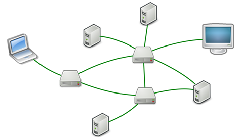

TCP/IP简介
转载至 [廖雪峰Python教程]
虽然大家现在对互联网很熟悉，但是计算机网络的出现比互联网要早很多。
计算机为了联网，就必须规定通信协议，早期的计算机网络，都是由各厂商自己规定一套协议，IBM、Apple和Microsoft都有各自的网络协议，互不兼容，这就好比一群人有的说英语，有的说中文，有的说德语，说同一种语言的人可以交流，不同的语言之间就不行了。
为了把全世界的所有不同类型的计算机都连接起来，就必须规定一套全球通用的协议，为了实现互联网这个目标，互联网协议簇（Internet Protocol Suite）就是通用协议标准。Internet是由inter和net两个单词组合起来的，原意就是连接“网络”的网络，有了Internet，任何私有网络，只要支持这个协议，就可以联入互联网。
因为互联网协议包含了上百种协议标准，但是最重要的两个协议是TCP和IP协议，所以，大家把互联网的协议简称TCP/IP协议。
通信的时候，双方必须知道对方的标识，好比发邮件必须知道对方的邮件地址。互联网上每个计算机的唯一标识就是IP地址，类似 123.123.123.123 。如果一台计算机同时接入到两个或更多的网络，比如路由器，它就会有两个或多个IP地址，所以，IP地址对应的实际上是计算机的网络接口，通常是网卡。
IP协议负责把数据从一台计算机通过网络发送到另一台计算机。数据被分割成一小块一小块，然后通过IP包发送出去。由于互联网链路复杂，两台计算机之间经常有多条线路，因此，路由器就负责决定如何把一个IP包转发出去。IP包的特点是按块发送，途径多个路由，但不保证能到达，也不保证顺序到达。

IP地址实际上是一个32位整数（称为IPv4），以字符串表示的IP地址如192.168.0.1实际上是把32位整数按8位分组后的数字表示，目的是便于阅读。
IPv6地址实际上是一个128位整数，它是目前使用的IPv4的升级版，以字符串表示类似于 2001:0db8:85a3:0042:1000:8a2e:0370:7334 。
TCP协议则是建立在IP协议之上的。TCP协议负责在两台计算机之间建立可靠连接，保证数据包按顺序到达。TCP协议会通过握手建立连接，然后，对每个IP包编号，确保对方按顺序收到，如果包丢掉了，就自动重发。
许多常用的更高级的协议都是建立在TCP协议基础上的，比如用于浏览器的HTTP协议、发送邮件的SMTP协议等。
一个TCP报文除了包含要传输的数据外，还包含源IP地址和目标IP地址，源端口和目标端口。
端口有什么作用？在两台计算机通信时，只发IP地址是不够的，因为同一台计算机上跑着多个网络程序。一个TCP报文来了之后，到底是交给浏览器还是QQ，就需要端口号来区分。每个网络程序都向操作系统申请唯一的端口号，这样，两个进程在两台计算机之间建立网络连接就需要各自的IP地址和各自的端口号。
了解了TCP/IP协议的基本概念，IP地址和端口的概念，我们就可以开始进行网络编程了。